There are two main directories in the data folder:
.qptiff format as well as the panel.tsv, panel_thresholding.tsv, phenotypes.tsv, unmixing_parameters.csv and unmixing_parameters_values_distribution.csv files. A README file describes their formats.samples folder.If a sample exists in the samples directory but is absent from the analyses directory, the home page (http://localhost:8088) of IFQuant will display the shell command to run (Figure 1)
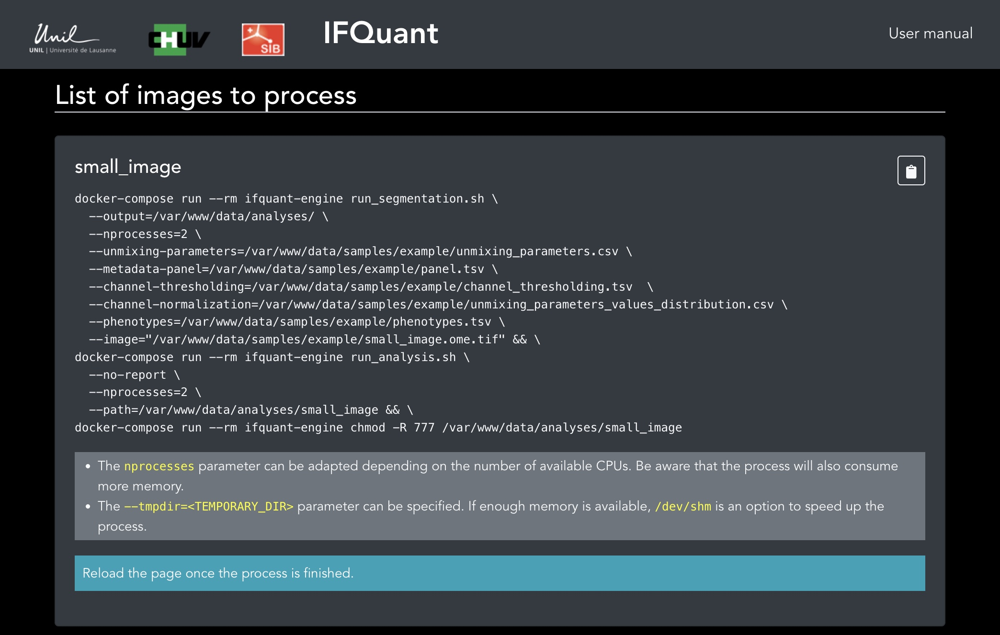 Figure 1
To process the image, open a terminal window and move to the directory containing the docker-compose.yml file and copy / paste the provided command.
Note:
--nprocesses parameter can be adapted depending on the number of available CPUs. Be aware that the process will also consume more memory.--tmpdir=<TEMPORARY_DIR> parameter can be specified. By default, the process is creating a tmp/ directory in the analysis directory. If enough memory is available, /dev/shm is an option to speed up the process.Processing will take several minutes.
Once the process is finished, refresh the home page (http://localhost:8088). The sample will be listed in the List of samples (Figure 2)
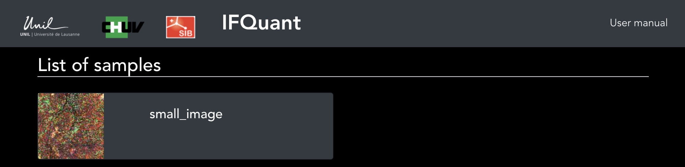 Figure 2
Click on it to open it in IFQuant (Figure 3).
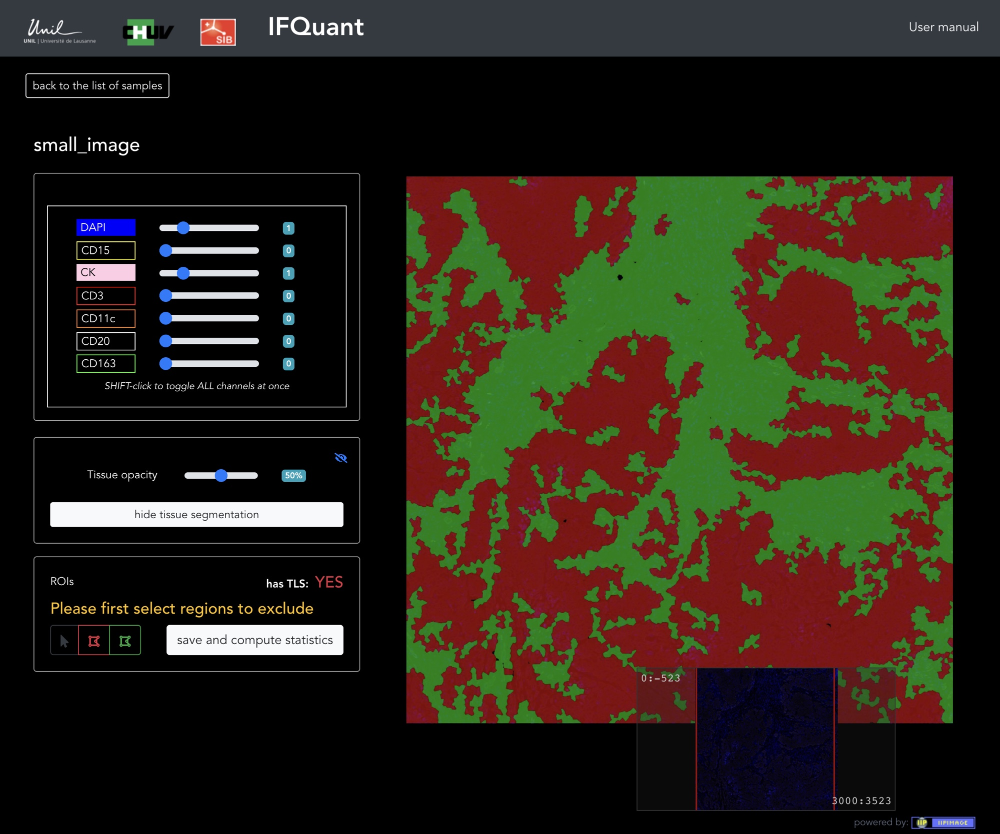 Figure 3
Three QC masks are available. Tissue segmentation / sharpness / saturation. By default the tissue segmentation mask is displayed (stroma colored in green and tumor in red). A slider enables changing the opacity of the mask, and thus display the underlying cells. To change QC mask, click on the hitde tissue segmentation button.
The image might contain some background noise of regions of bad quality. These regions can be excluded by first ensuring that the red exclusion tool button is selected and then by drawing excluded regions on the slide (Figure 4).
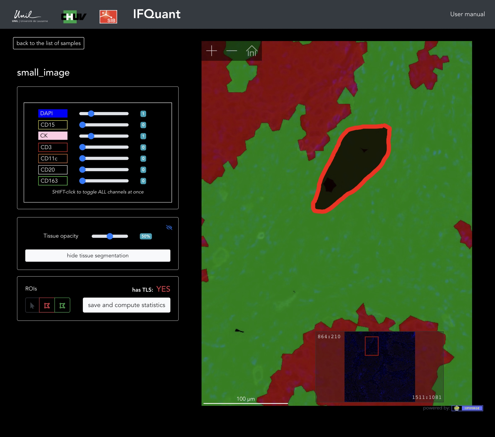 Figure 4
Once all regions have been drawn, click on the save and compute statistics button. A modal window will display a shell command to paste into the terminal window (Figure 5). Ensure that you are always located in the directory containing the docker-compose.yml file.
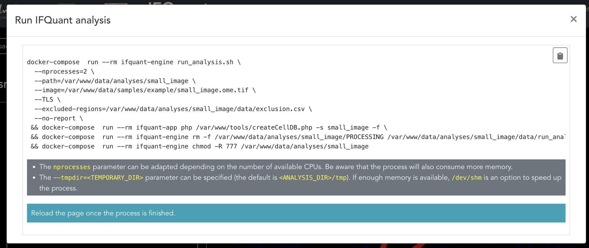 Figure 5
Note:
--nprocesses parameter can be adapted depending on the number of available CPUs. Be aware that the process will also consume more memory.--tmpdir=<TEMPORARY_DIR> parameter can be specified. By default, the process is creating a tmp/ directory in the analysis directory. If enough memory is available, /dev/shm is an option to speed up the process.Once the sample is ready for analysis, the following interface will be displayed (Figure 6)
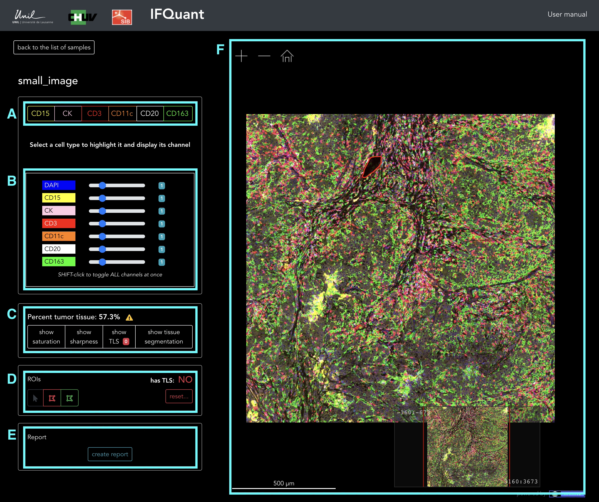 Figure 6
IFQuant uses the notion of marker intensity thresholding to define a cell as being positive or negative for a given marker. IFQuant provides a user interface to adjust these thresholds.
The distribution of the tumor marker signals across all cells often follows a bimodal distribution. In this case, IFQuant can suggest a usually pretty coherent threshold value. In the case where IFQuant is not confident enough to assign the default threshold, the show tissue segmentation button will be highlighted in red and a check tissue segmentation badge will be displayed. This is the case for our test sample. To adjust the tumor marker threshold, click on the check tissue segmentation and then on the adjust segmentation button. A series of tissue masks corresponding to different tumor marker thresholding values will be displayed on the right side of the screen. By clicking on the graph button next to the Adjust Segmentation title, the distribution of the tumor marker intensity signal will be displayed. In our example, we can notice that the default threshold is too low. By clicking the value 25, we can correct this value. We can play with the tissue opacity slider on the left side of the screen to verify the pertinence of the mask regarding the cells expressing the tumor marker (Figure 7). Once we are done, we can close the adjust segmentation interface and hide the tumor mask (Figure 6.C).
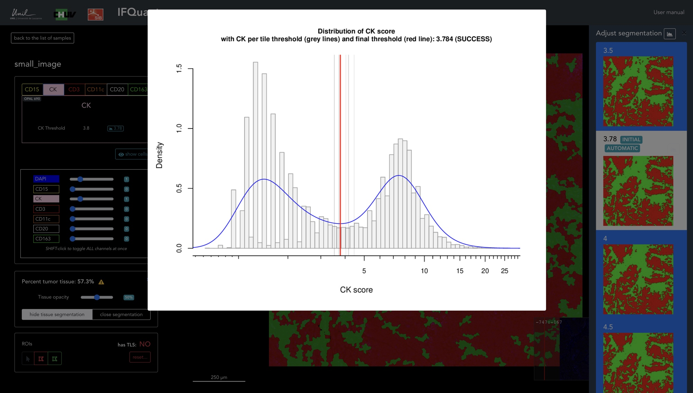 Figure 7
To adjust the intensity threshold of a given marker, first select it (Figure 6.A). By default, only the DAPI and the selected marker are displayed in the image. You can add additional cell types by selecting them (Figure 6.B). By clicking on the show cells button, the center of each positive cells will be spotted with a red circle (Figure 8).
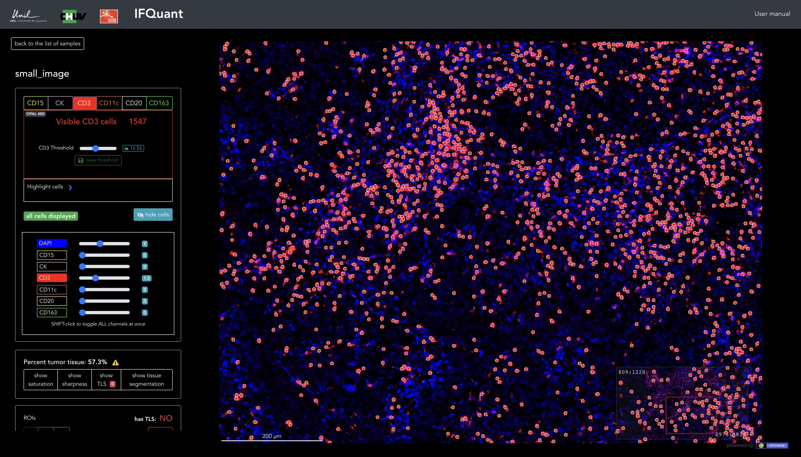 Figure 8
Note that for performance reasons, if too many cells are positive, only a fraction of those will be highlighted. If less the 1000 cells are visible on the image, negative cells will be spotted with a small gray circle. By clicking on the circle, the marker intensity value will be displayed (Figure 9).
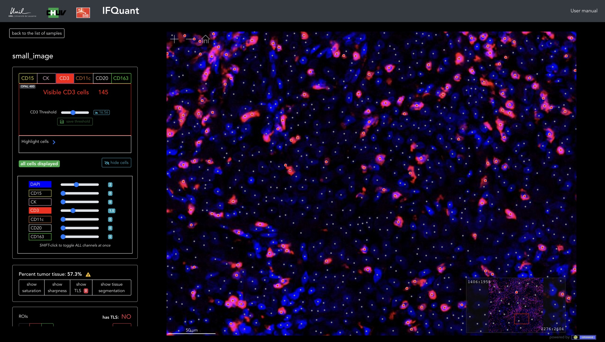 Figure 9
IFQuant also provides a FACS-like interface to explore the distribution of the signal intensity of a given compared to the other markers. To display the series of scatter plots, click on the blue plot button at the right of the thresholding slider (Figure 10). The actual threshold is displayed as a vertical dashed line. The threshold can be adjusted in the interface by moving the green line (following the cursor) to the correct value and clicking on the mouse).
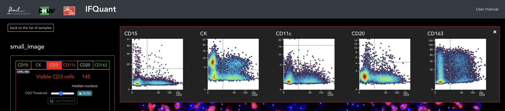 Figure 10
If the tissue contains several regions of interest (Tumor tissue, Next to tumor tissue, TLS, Host tissue, Adipose tissue or Necrosis) that should be quantified independently, the user can draw these regions on the image (Figure 11). First select the ROI green button, then draw freely the region with the mouse and finally, select the type of ROI from the select menu.
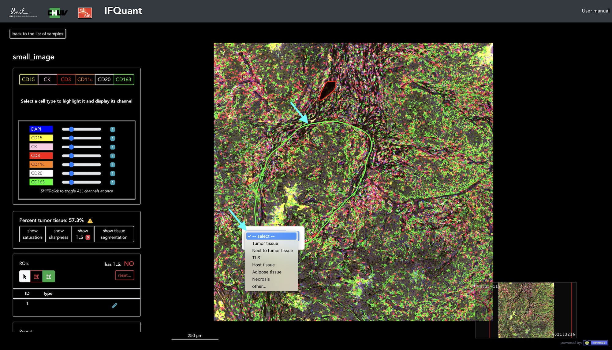 Figure 11
Once all thresholds have been reviewed and adjusted and ROI have been created (optional), a summary statistics can be computed and a PDF report generated. To do so, click on the create report button. Once again, a shell command will be displayed (Figure 12). Copy and paste it in a terminal window. Ensure that you are always located in the directory containing the docker-compose.yml file.
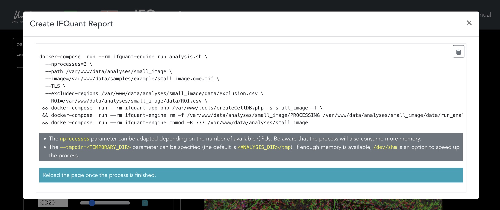 Figure 12
Note:
--nprocesses parameter can be adapted depending on the number of available CPUs. Be aware that the process will also consume more memory.--tmpdir=<TEMPORARY_DIR> parameter can be specified. By default, the process is creating a tmp/ directory in the analysis directory. If enough memory is available, /dev/shm is an option to speed up the process.Once the report is ready, it can be downloaded from the Report section at the bottom of the left panel (Figure 13). There are at least 3 files at the end of the analysis:
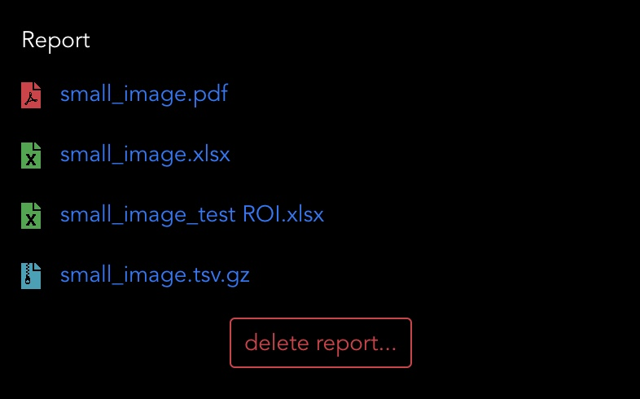 Figure 13
sample_name.pdf: A full PDF report containing quality control plots and summary statisticssample_name.xlsx: An Excel document containing several spreadsheets with summary statistics. If ROIs have been defined, a version of this file is available for each ROI.sample_name.tsv.gz`: A compressed tab-delimited text file containing the processed data. Each row is a cell and columns contain cell coordinates, the tissue type of the cell (stroma/tumor), if a cell is part of an ROI, the signal intensity of each marker, the signal intensity of each marker devided by its thresholds (useful to derive marker positivity) and a phenotype key. Note on the PDF report: Several figures of the full sample are available in the PDF report. They are created at the scale 1:32 (one pixel in the report = 32 in the original image). It appears that this ratio is well suited to fit a whole sample in the report and to represent cell densities. For this reason, if an original image is "small" (like the provided example image), some figures in the report might show a 'pixelated' aspect.
At this stage, the sample is on 'read-only' mode. No more threshold modifications of ROI adjustments are possible. To modify the analysis, first delete the existing report by clicking on the delete report... button.